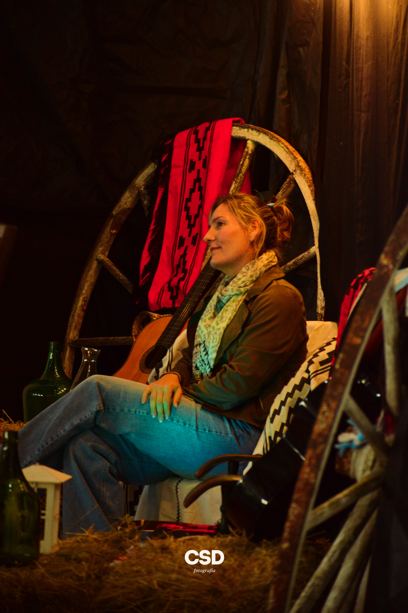

Más que diseño,
historias.
¡Hola! Soy Cande.
Soy diseñadora de la Comunicación Visual en formación, creadora audiovisual y community manager, con la fotografía como una de mis grandes pasiones.
Me gusta transformar ideas en imágenes, videos y piezas visuales que comuniquen y tengan identidad. Soy creativa, curiosa y detallista, y disfruto involucrarme en cada etapa de un proyecto, desde la primera idea hasta el resultado final.
Creo que cada proyecto tiene una historia para contar y que el diseño es una herramienta para transmitirla de una manera única.
Conocé mi trabajo →